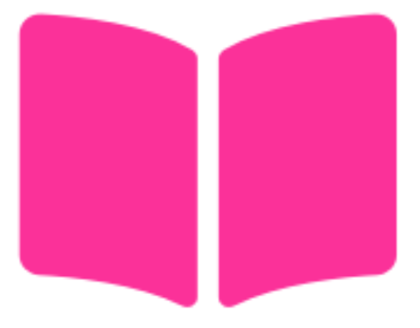
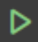
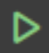

6. Versión 3: RGB light RGB¶
Ya tenemos una librería que nos permite tener botones que funcionan autónomamente mediante FSM. De ella hemos creado un botón que representa la marcha atrás del coche. Además, hemos creado una librería que nos permite crear transceptores de ultrasonido, también gestionados mediante FSM. De esta última, hemos creado un transceptor que estaría colocado en la parte trasera del coche para detectar obstáculos mientras se aparca.
Bibliografía
En este capítulo vamos a crear una librería que nos permita mostrar un RGB light (LED) RGB donde cada color estará controlado por una señal PWM. Este RGB light nos permitirá mostrar a qué distancia se encuentra un obstáculo del coche.
Como ya hicimos en las versiones anteriores, (i) vamos a implementar la parte portable PORT dependiente del HW para comunicarnos con el RGB light (LED) RGB, y lo probaremos con un test unitario. (ii) Después, vamos a crear la lógica de la FSM para gestionar la representación de la distancia con los distintos colores (la parte COMMON), y lo probaremos con un test unitario. (iii) Por último, montaremos el HW y probaremos el funcionamiento del LED RGB con un programa de ejemplo.
Cuando lea esta introducción conviene que lea y entienda el capítulo "Circuito de reloj” del libro 1, prestando especial atención al ejemplo proporcionado sobre PWM.
Cada uno de los LED (, y ) del RGB light RGB estará conectado a una GPIO del STM32F446RE. Los tres LED están controlados por el mismo temporizador en modo PWM, pero cada uno con un canal de dicho temporizador. La señal PWM es una señal cuadrada que tiene un periodo fijo y un ciclo de trabajo variable. Si el ciclo de trabajo es del 100\%, el LED estará a máxima intensidad, y si es del 0\%, el LED estará apagado. Las características a destacar del sistema de la Versión 3 se muestran en el .
Un color se representa en el RGB light RGB mediante la combinación de los tres colores básicos: rojo, verde y azul. La combinación de los tres colores básicos en diferentes proporciones nos permite obtener una amplia gama de colores. La intensidad la controla el ciclo de trabajo (canal del temporizador), pero la frecuencia para los tres colores será la misma. La frecuencia de la señal PWM será de \(50 Hz\), valor lo suficientemente alto para que no se perciba el parpadeo de los LED. Nuestro ojo integrará esos trenes de pulsos y lo veremos como un color determinado. Si se cambia el ciclo de trabajo, estaremos controlando la intensidad de cada LED, y por tanto el color mostrado.
¿Cuándo cambiaremos los valores del ciclo de trabajo? Pues depende de la distancia a la que se encuentre el objeto detectado por el sensor de RGB light. Cuanto más cerca, más rojo, y cuanto más lejos, más azul. El verde se usará para mostrar distancias intermedias y entre medias tendremos una mezcla de colores. En el se muestran los valores de ciclo de trabajo para seis situaciones de distancia que se contemplan en el sistema Simone. En la Versión 5 puedes implementar funciones de interpolación para que el cambio de color sea más suave. Tienes una lista de colores en la www.downtownuplighting.com—aunque no todos se pueden mostrar en un LED RGB.
La muestra un ejemplo de señal PWM para un color amarillento (que no el amarillo de el ). Se muestran en el osciloscopio dos de los LED del RGB light RGB. En la parte superior se muestra el canal de osciloscopio para el LED rojo, y en la parte inferior el canal de osciloscopio para el LED verde. Fíjate que el periodo de la señal PWM es el mismo para los dos LED (\(20 ms\)), pero el ciclo de trabajo es distinto: \(20.8\%\) para el LED rojo y \(36.6\%\) para el LED verde.
Igual que hemos hecho hasta ahora, estamos desarrollando una librería. Así, cada vez que se quiera añadir un RGB light (LED) RGB le asociaré una FSM. Las particularidades de dónde está conectado cada nuevo RGB light, sus características físicas, etc., son cosas específicas del HW, por lo que estarán en PORT.
La muestra las estructuras que vamos a necesitar para el RGB light RGB. La estructura del HW del LED RGB (en PORT) se muestra en la . La estructura de la FSM (en COMMON) se muestra en la .
6.0.0.0.1 { #section }¶
Preparemos el proyecto para poder añadir el RGB light (LED) RGB:
-
Descarga del repositorio de la asignatura los ficheros correspondientes a la parte PORT de la librería del RGB light correspondientes a la versión
V3: https://github.com/sdg2DieUpm/Simone/tree/simone_v3. Solo descarga por ahora:port_rgb_light.h,stm32f4_rgb_light.h, ystm32f4_rgb_light.cy colócalos en las carpetas correspondientes. No añadas los ficheros de la parte COMMON. -
Coloca cada uno donde corresponde:
PORToCOMMON, eninclude, osrc, como se explicó en el los capítulos anteriores. -
Verás que no compila, y es que solo se proporciona un esqueleto del código.
6.1 PORT: cabeceras de la librería del RGB light¶
Vamos a implementar el contrato con el usuario de la parte dependiente del HW de librería del RGB light. Esta es la interfaz que vamos a proporcionar al usuario para que pueda usar la librería y añadir LED RGB como necesite. Vamos a portar las funciones necesarias para usar la librería, cómo no, para la placa Nucleo-STM32F446RE. Comenzaremos de nuevo por la cabecera y luego los códigos fuente. El montaje de nuestro RGB light RGB con la Nucleo-STM32F446RE se muestra en la .
En el mercado existen numerosos LED RGB. En este proyecto utilizaremos un LED de cátodo común. En este tipo de LED, el ánodo de cada LED está conectado a un pin del microcontrolador a través de una resistencia, y los cátodos de los tres LED están internamente conectados a un pin común que irá a tierra. Para adquirir uno, ve al ).
6.1.1 Cabecera port_rgb_light.h¶
Esta cabecera depende del HW pero no de las particularidades del microcontrolador STM32F446RE. Vamos a seguir los siguientes pasos:
-
Incluye todas las cabeceras necesarias según indica la API.
-
Incluye los (
#define) que se indican en la API para RGB lightPORT_RGB_LIGHT_IDque refleja la distancia al objeto en la parte trasera del coche.-
PORT_RGB_LIGHT_ID: valor numérico natural que será el identificador del RGB light trasero. Si es el único RGB light del sistema, le asignaremos el 0. -
COLOR_RGB_MAX_VALUE: valor máximo que puede tomar el ciclo de trabajo de un LED RGB. Usaremos 255 que es el máximo valor que puede tomar unuint8_t. -
COLOR_RED,COLOR_GREEN, …: son estructuras de tiporgb_color_tque representan los colores de el . Cada estructura tiene tres campos:red,greenyblueque representan el ciclo de trabajo en 8 bits. Siendo 0 el ciclo de trabajo mínimo y 255 el máximo. Es opcional usar estas estructuras, pero es una buena práctica para que el código sea más legible.
-
-
Escribe los prototipos de las funciones públicas que aparecen en la API del fichero
port_rgb_light.h. -
Puede ser buen momento ahora para documentar con Doxygen.
Ya hemos acabado con el encabezado que interactúa con el HW del RGB light y que no depende del microcontrolador. Todavía dará errores al compilar. Vamos ahora a programar la cabecera que sí depende del microcontrolador stm32f4_rgb_light.h.
6.1.2 Cabecera stm32f4_rgb_light.h¶
Esta cabecera solo define los pines a los que está conectado el LED RGB de cada RGB light asociado.
-
Incluye todas las cabeceras necesarias según indica la API.
-
Define (
#define) los valores de las GPIO de los pines de los LED rojo, verde y azul. -
Documenta los
#definecon Doxygen.
Ya hemos acabado con el encabezado (header) que interactúa con el HW del RGB light conectado al microcontrolador Nucleo-STM32F446RE. Todavía dará errores al compilar. Vamos ahora a implementar todas las funciones prototipadas en port_rgb_light.h.
6.2 PORT: fuente de la librería del RGB light¶
Vamos a portar las funciones necesarias para usar la librería del RGB light y comprobar que la parte HW está bien programada. Vamos a programar los ficheros fuente de la parte PORT, que todos estarán en el fichero stm32f4_rgb_light.c. Deberás implementar o completar todas las funciones públicas de las que se hayan declarado el prototipo en el encabezado y algunas funciones privadas.
6.2.1 Fuentes stm32f4_rgb_light.c¶
Este fichero es mucho menos extenso que el de la versión anterior. La mayor complejidad está en la configuración de los canales del temporizador, pero si ha leído el capítulo del libro relativo a PWM y lo ha entendido, no debería tener problema 1. Vamos a ello.
-
Incluye las librerías necesarias, si falta alguna, según indique la API.
-
Hay que definir la estructura
stm32f4_rgb_light_hw_t. En la estructura se definen los campos que se muestran en la y en la API.Esta estructura es genérica para cualquier LED RGB que vayamos a usar, no solo el referente al trasero del coche, sino cualquier otro que queramos añadir. Es muy sencilla y básicamente contiene los campos de las GPIO de los pines de los LED rojo, verde y azul.
-
Igual que hicimos con el botón, ahora vamos a definir una variable global privada
static stm32f4_rgb_light_hw_t rgb_lights_arr[]. Se trata del array de estructuras de tipostm32f4_rgb_light_hw_t, que representa al HW de cada RGB light que tengamos en nuestro coche.Asigna los valores HW del LED RGB de aparcamiento trasero
PORT_RGB_LIGHT_IDutilizando los#definedestm32f4_rgb_light.h. -
Codifica la función
_stm32f4_rgb_light_get()de manera análoga a como se ha hecho en las versiones anteriores.
6.2.1.0.1 ¶
Ahora vamos a codificar las funciones más importantes de la parte PORT del RGB light, y son las que configuran el temporizador asociado al LED RGB trasero.
-
Codifica la función
_timer_pwm_config()como indica la API. Esta función configura el temporizador que controla los ciclos de trabajo de los LED rojo, verde y azul. Para ello, apóyate en el ejemplo "timer para PWM” del libro de Fundamentos 1.Esta función configura un temporizador para que genere una señal PWM con una frecuencia fija y un ciclo de trabajo variable. El temporizador elegido y la frecuencia se muestra en el .
Esta función recibe el identificador del RGB light RGB. Cada RGB light tendrá su propio temporizador, pero esta función será llamada para configurar todos ellos. Asegúrate de que el código se ejecuta dentro de un bloque condicional que compruebe el identificador del RGB light.
Para saber qué fuente de reloj habilitar para el temporizador, consulta la tabla "Figure 3. STM32F446xC/E block diagram” del datasheet 2. Allí podrás ver si nuestro temporizador está conectado al APB1 o al APB2, y tenemos que habilitar el reloj en el registro
RCC->APB1ENRoRCC->APB2ENRrespectivamente.Puedes poner los valores de los registros
TIMx->PSCyTIMx->ARRa mano, o usando las ecuaciones. Puedes crear un#definepara la frecuencia de la señal PWM, si te es más cómodo. Si lo haces a mano, asegúrate de que los valores son correctos.Asegúrate de que los registro Capture Compare Enable Register (
CCER) y Capture Compare Mode Register (CCMRx) están configurados correctamente. En el CCER se habilitan los canales de salida y en el CCMRx se configura el modo PWM. La x es el registro 1 o 2, dependiendo del canal que estés configurando.Es muy importante que la función
_timer_pwm_config()se llame desde la funciónport_rgb_light_init(). Si no, no se podrán generar las señales PWM.
Vamos a continuar con las funciones públicas de la parte PORT del RGB light.
-
Completa la función
port_rgb_light_init()como se indica en la API.Configura las GPIO y el modo alternativo de los tres LED RGB. Para ello, consulta la tabla de Función Alternativa del datasheet 2.
Asegúrate de que la función
_timer_pwm_config()se llama desde esta función y que el LED RGB comienza apagado. -
Codifica la función
port_rgb_light_set_rgbsiguiendo la API.Esta función se encarga de configurar el ciclo de trabajo de los LED rojo, verde y azul. Lo hace con la proporción de los valores recibidos en la estructura
rgb_color_tsobre el máximo valor definido enCOLOR_RGB_MAX_VALUE. Si el valor recibido es 0, el LED estará apagado, deshabilitando el canal correspondiente.Fíjate que la función recibe el identificador del RGB light RGB. Asegúrate de que el código se ejecuta dentro de un bloque condicional que compruebe el identificador del RGB light.
-
Si queda algo por documentar puede ser buen momento ahora.
Si ahora compila, el código no debería tener ningún error. ¡Ya hemos acabado con la implementación de portado del RGB light (LED) RGB! Vamos a probarlo con el test unitario de la parte PORT.
6.3 PORT: Test unitario del RGB light¶
Vamos a comprobar que la parte PORT funciona correctamente pasando los test HW del código que hemos desarrollado de la librería del RGB light (LED) RGB antes de continuar con la FSM.
¡Importante! Los test que se proporcionan comprueban solo algunos aspectos esenciales, pero no son exhaustivos. Es responsabilidad del alumno comprobar que el sistema final funciona correctamente.  Ten a mano y revisa el capítulo "Test unitarios y ejemplos de integración” del libro de fundamentos teóricos 1.
Descarga el fichero de test HW del RGB light test_port_rgb_light.c de https://github.com/sdg2DieUpm/simone/tree/simone_v3_test. Ponlo en la carpeta test/stm32f4 de tu proyecto.
-
Conecta la placa Nucleo-STM32 al ordenador.
-
Pulsa sobre el icono de depuración
 y selecciona  Clean and Debug sobre la plataforma que queramos depurar (
y selecciona  Clean and Debug sobre la plataforma que queramos depurar (stm32f446re). -
En el desplegable que se abre, selecciona el test
test_port_rgb_light. Se compilará y se cargará en la placa. -
Comprueba que todos los test pasan correctamente en el texto mostrado en la terminal de depuración. Si no es así, lee los mensajes de error y corrige tu código hasta que pase todas las pruebas. Si no pasa las pruebas, no continúes con el siguiente test.
-
Termina la depuración pulsando () y repite el proceso hasta que pase todos los test.
¡Ya hemos acabado con la parte PORT del RGB light! Vamos ahora a implementar la parte COMMON.
6.4 COMMON: cabecera de la FSM del RGB light¶
6.4.0.0.1 Consideraciones de la FSM del RGB light¶
6.4.0.0.2 ¶
Antes de empezar vamos a partir de una serie de consideraciones.
-
La FSM almacena la última distancia que se le ha indicado que tiene que representar.
-
La FSM contiene un campo de estado (
status) que indica si el RGB light está activo. El sistema Simone puede estar en modo aparcamiento y el ultrasonidos puede estar tomando medidas, pero el RGB light se puede desactivar para que no moleste. Si el RGB light está desactivado, no se mostrará ningún color. Esto es habitual, sobre todo cuando el sistema de notificación de obstáculos es un pitido. En otras situaciones, por ejemplo, con más sensores alrededor del coche, el RGB light puede estar activo.La máquina de estados superior, la del sistema Simone, será la que indique si el RGB light está activo o no. La FSM del RGB light solo se encargará de representar la distancia en colores si está activo.
-
La FSM contiene otro flag que indica si el RGB light está en modo ocioso (
idle). En este estado, el RGB light ya ha puesto un color, no se ha cambiado la distancia, y podemos entrar en un modo de bajo consumo Sleep Mode (Versión 4). Esto puede ser normal en una situación en la que se está aparcando (marcha atrás) y no se está moviendo. En Sleep Mode, el núcleo del procesador se detiene, pero los periféricos y el sistema de reloj continúan funcionando, por eso el LED permanecerá encendido en el color que se haya quedado. -
El flag
new_colorlo activa la máquina de estados de Simone cuando se ha cambiado la distancia a representar. La FSM del RGB light comprobará este flag para saber si tiene que cambiar el color del LED. -
El valor de inicio de distancia al arrancar la FSM debe ser negativo, de tal manera que nos aseguremos que es una distancia inválida y el LED RGB permanezca apagado. El valor de la distancia se mide en centímetros.
-
La FSM contiene información del identificador (
ID) del RGB light. EsteIDes único y gestionado por el usuario en elPORT. Ahí es donde el usuario proporciona identificadores e información HW (GPIO a la que está conectado) para todos los RGB light (LED) RGB del sistema.
Nuestra librería implementa la lógica de la FSM mostrada en la y que llamaremos fsm_rgb_light (en los ficheros .c y .h). Tiene 2 estados en los que:
-
WAIT_COLOR: estado inicial de la FSM. En este estado la FSM espera a que se le indique una distancia para representar. Si se le indica una distancia, se calcula el color y se cambia al estadoSET_COLOR. También se vuelve a este estado cuando el sistema de aparcamiento no está activo (statusesfalse). -
SET_COLOR: en este estado la FSM calcula el color en función de la distancia que se le ha indicado. Tras poner el color, se activa el flagidley se queda en este estado.
La parte COMMON de nuestra librería trabaja con la estructura (struct) pública que se muestra en la . El tipo de esta estructura está declarada en el fichero fsm_rgb_light.h (typedef struct fsm_rgb_light_t fsm_rgb_light_t;), pero la definición de la estructura está en el fichero .c.
- Lo primero, descarga del repositorio de la asignatura los ficheros correspondientes a la parte COMMON de la librería del RGB light correspondientes a la versión
V3: https://github.com/sdg2DieUpm/Simone/tree/simone_v3. Solo descarga lo que faltaba por implementar, es decir, los ficherosfsm_rgb_light.hyfsm_rgb_light.c. Ponlos en las carpetas correspondientes de tu proyecto.
Ahora, vamos a completar la cabecera de la FSM del RGB light, fsm_rgb_light.h.
-
Incluye las librerías necesarias, si falta alguna, según indique la API.
-
Ahora vamos a definir el enumerado con los nombres de los estados de la FSM. Escribe el
enumFSM_RGB_LIGHT_SYSTEMcon los nombres de los estados del diagrama de la . -
Defina los
#defineque se indican en la API para las distancias máximas y mínimas que se pueden representar en el RGB light. Estas distancias son las que se indican en el . El valor de la distancia se mide en centímetros, y el máximo de un umbral coincide con el mínimo del siguiente, *e.g.*DANGER_MAX_CMes igual aLEVEL_MEDIUM_MIN_INTENSITY, etc. -
Es buena práctica ir documentado el código a la vez que se programa.
-
Seguidamente declararemos la estructura
fsm_rgb_light_tpara hacerla pública. No obstante, no vamos definir sus campos públicamente, como se ha indicado anteriormente.
Continuamos con las declaraciones de funciones públicas de la librería. Procedamos:
-
Escribe los prototipos de las funciones públicas que aparecen en la API del fichero
fsm_rgb_light.h. Añada la funciónfsm_rgb_light_check_activity()aunque la usaremos en la siguiente versión, también será necesaria para el test de la FSM. -
Puede ser buen momento ahora para documentar las funciones con Doxygen.
Vamos ahora a programar el fichero fuente fsm_rgb_light.c.
6.5 COMMON: fuente de la FSM del RGB light¶
Vamos a proceder con la implementación de las funciones del RGB light. Deberás implementar todas las funciones públicas de las que ya has declarado el prototipo en el encabezado, y la función privada que aparece en la API del fichero fsm_rgb_light.c. También definiremos las variables globales y estructuras que sean necesarias. ¡Recuerda que las funciones privadas no se declaran en el .h!
-
Lo primero que debe aparecer es la inclusión de cabeceras como indica la API.
-
Vamos a declarar la estructura
fsm_rgb_light_t. Definiremos la estructura con los campos que se muestran en la . Es muy importante que la máquina de estados del RGB lightfsm_tsea el primer campo. -
De igual modo, es buen momento para aprovechar a documentar la estructura.
Ahora empezamos a codificar las funciones privadas de la FSM. Bajo la línea de /* Private functions */ vamos a codificar la función _compute_rgb_light_levels().
-
Codifica la función
_compute_rgb_light_levels()que se encarga de calcular los niveles de ciclo de trabajo de cada LED rejo, verde y azul. Esta función recoge de la estructura de la FSM la distancia, y sigue el flujograma de la API. Puedes asignar el valor a cada campo de la estructurargb_color_t *p_colordirectamente o, si definiste las estructuras de colores en el.h, puedes asignarlas a la estructura de color. Ten en cuenta que el valor que almacenan no es el ciclo de trabajo entre 0 y 100, sino entre 0 y 255. -
Documenta la función con Doxygen.
Continuamos con las funciones de entrada o comprobación check_ de la FSM bajo la línea de /* State machine input or transition functions */.
-
Codifica las funciones
check_active(),check_set_new_color()y,check_off()como se indica en la API. -
Documenta las funciones con Doxygen, encima del nombre de cada función.
Seguiremos con las funciones de salida o actualización de la FSM do_.
-
Codifica las funciones
do_set_on(),do_set_color()y,do_set_off()como se indica en la API. -
Documenta las funciones con Doxygen. En este caso, igual que antes, la documentación irá en el
.c, encima del nombre de cada función.
6.5.0.0.1 ¶
Todavía no hemos acabado con el desarrollo, pero puedes compilar para ir depurando errores.
-
Declara la tabla de transiciones de la FSM
fsm_trans_rgb_light. Esto eliminará muchos errores de compilación. -
Completa la función de inicialización de la FSM
fsm_rgb_light_init()como se indica en la API. En esta función se inicializan los campos de la estructura de la FSM, y se llama a la funciónfsm_init()para inicializar la máquina de estados. También se llama a la funciónport_rgb_light_init()para inicializar el HW del LED RGB. -
Codifica las funciones
fsm_rgb_light_fire()yfsm_rgb_light_destroy()igual que hiciste en las versiones anteriores. Estas funciones lanzan la FSM y liberan la memoria respectivamente. -
Codifica las funciones
fsm_rgb_light_get_inner_fsm()yfsm_rgb_light_get_state(). Se usarán en el test de la FSM. -
Codifica las funciones
fsm_rgb_light_get_intensity(),fsm_rgb_light_set_level(),fsm_rgb_light_get_status()yfsm_rgb_light_set_status()como se indica en la API.
Ya hemos acabado con la programación de la librería del RGB light. Ahora, si compilas, no deberán aparecer errores.
- Documenta el código que esté sin comentar todavía.
6.6 COMMON Test unitario de la FSM del RGB light¶
Vamos a hacer el test del código que hemos desarrollado de la librería de la máquina de estados del RGB light y probar que funciona antes de continuar con la siguiente versión.
¡Importante! Recuerda que los test que se proporcionan comprueban solo algunos aspectos esenciales, pero no son exhaustivos. Es responsabilidad del alumno comprobar que el sistema final funciona correctamente.
Descarga el fichero de test de la FSM del RGB light test_fsm_rgb_light.c de https://github.com/sdg2DieUpm/simone/tree/simone_v3_test. Ponlo en la carpeta test/ de tu proyecto. ¡No lo metas en stm32f4/, pues no es un test específico del microcontrolador!
-
Con la placa Nucleo-STM32 conectada al ordenador.
-
Pulsa sobre el icono Clean and Debug sobre la plataforma que queramos depurar (
stm32f446re). -
En el desplegable que se abre, selecciona el test
test_fsm_rgb_light. Se compilará y se cargará en la placa. -
Ejecuta el test por completo, o pon puntos de parada si deseas ir paso a paso.
-
Comprueba los mensajes del
gdb-serverpara ver el resultado de las pruebas de los tests. Debería haber pasado todos los tests. Si no, lee el mensaje de error y corrige tu código hasta que pasen todas las pruebas. Si no pasan las pruebas, no continúes. -
Termina la depuración pulsando () y repite el proceso hasta que pasen todos los test.
6.7 Ejemplo de uso de la Versión 3¶
En este test de integración del RGB light es responsabilidad del alumno comprobar que la funcionalidad es la esperada. El ejemplo que se da no contempla todas las situaciones.
Descarga el fichero de ejemplo example3̌.c de https://github.com/sdg2DieUpm/simone/tree/simone_v3_test. Ponlo en la carpeta example/ de tu proyecto.
Procedamos:
Para poder hacer el ejemplo del RGB light, necesitamos montar el LED RGB. En la se muestra un ejemplo de montaje.
-
Monte el HW como se muestra en la .
-
Con la placa Nucleo-STM32 conectada al ordenador.
-
Pulsa sobre el icono de depuración
y selecciona Clean and Debug sobre la plataforma que queramos depurar (stm32f446re). -
En el desplegable que se abre, selecciona el test
example_v3. Se compilará y se cargará en la placa. -
Se parará en la primera línea del
main(). Ejecuta el test por completo, o pon puntos de parada si deseas ir paso a paso. Este código no termina, pues es un buclewhileinfinito. -
Abre la terminal del
gdb-serverpara ver los mensajes que se van imprimiendo. -
Comprueba que los colores del LED RGB cambian en función de la distancia que se le indica en los mensajes de la terminal.
-
Haz distintas pruebas y asegúrate de que el comportamiento es el adecuado.
¡Hemos creado nuestra tercera librería! Fíjate que es portable a cualquier plataforma solo con adaptar las funciones del PORT.
No dejes de documentar el código. Comprueba que la documentación del código se ha generado correctamente como se explica en la "Guía de instalación de herramientas para compilación multiplataforma en C” 4., o en el vídeo "[MatrixMCU] Documentación de código con Doxygen”.
Guarda una copia de su proyecto como simone_v3 para tener un punto de partida para la siguiente versión, y una copia de seguridad por si algo falla.
-
Josué Pagán Ortiz. Fundamentos teóricos de sistemas basados en microcontrolador STM32. Universidad Politécnica de Madrid, 2024. ↩↩↩↩↩
-
STMicroelectronics. Stm32f446xc/e. Technical Report, STMicroelectronics, 2021. URL: https://www.st.com/resource/en/datasheet/stm32f446re.pdf. ↩↩↩
-
STMicroelectronics. Rm0390 reference manual. stm32f446xx advanced arm-based 32-bit mcus. Technical Report, STMicroelectronics, 2021. URL: https://www.st.com/resource/en/reference_manual/rm0390-stm32f446xx-advanced-armbased-32bit-mcus-stmicroelectronics.pdf. ↩
-
Josué Pagán Ortiz, Pedro José Malagón Marzo, Daniel Capellán Martín, Román Cárdenas Rodríguez, and Amadeo de Gracia Herranz. Guía de instalación de herramientas para compilación multiplataforma en C. Universidad Politécnica de Madrid, 2024. ↩